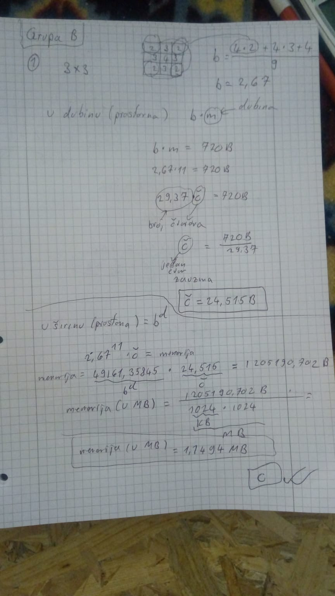
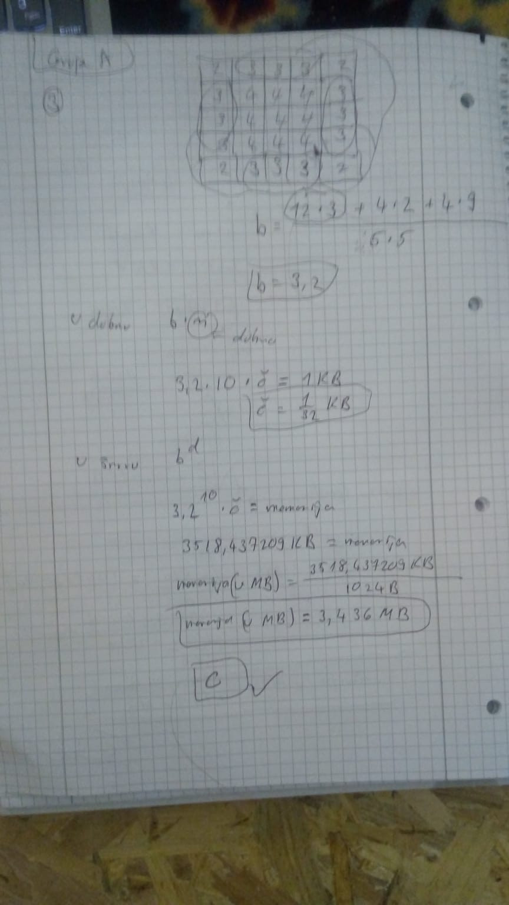
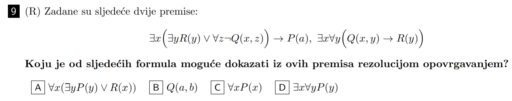
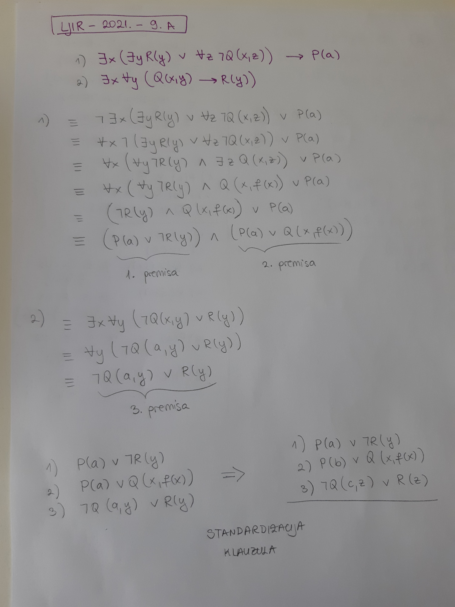
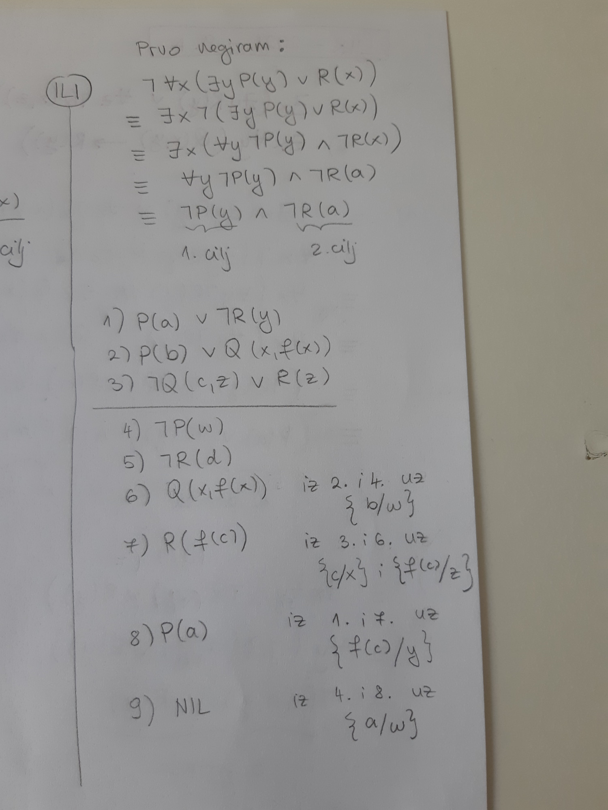
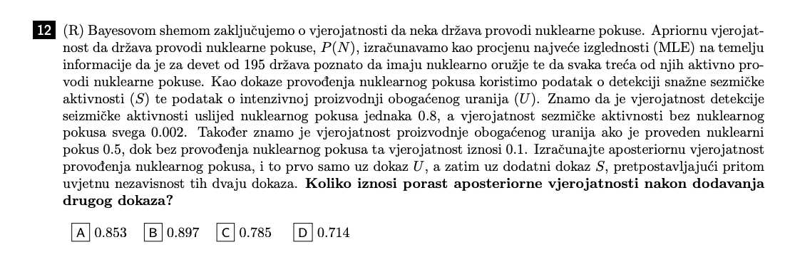
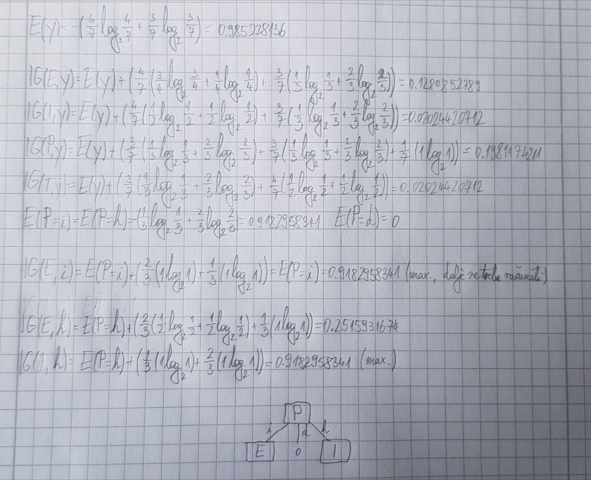
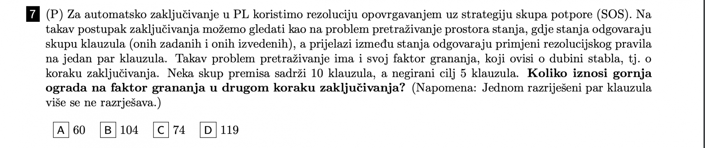

mornar Ica jesi uspio rijesiti?
steker nope, za svaki taj tip zadatka dobijem cca 3 puta veće od rješenja
steker
mornar Ica  
Riješio sam iz grupe A i B Ispalo je dobro pa je valjda dobro?😳
Olive Oil ja sam mislio da je prostorna složenost O(b^{d+1})? zbog toga mi i ispada otprilike 3 puta veće jer je b najčešće oko 3
mornar Ica tak sam i ja rješavao, ali danas sam naletio na 27. stranici i uzeo ono napisano u crvenom i dobio sam dobar rezultat.
zna li netko ovaj riješiti
jackPackage zadane dvije premise pretvoriš u cnf te onda svako rješenje negiraš i rezolucijom opovrgavanjem (uz odgovarajuće supstitucije) dobiješ da nil jedino možeš izvesti s ciljnom premisom pod a)
jackPackage evo cini mi se da sam uspila  
 Ima netko mozda postupak za ovaj zadatak, rjesenje je pod b
~~~~~~~~
ima li netko spremljene čupićeve skripte s http://java.zemris.fer.hr/nastava/ui/ jer mi time outa
mornar Ica imam samo 4
uporno dobivam da su na drugoj razini stabla I i T, i da prva raspodjela ide po P, jel ima netko ispravan postupak za ovo mozda, tocan odgovor je navodno pod a

prva raspodjela i ide po P, no kasnije možeš logički vidjeti da kod P=imperativna sve E=lijena su 0 te E=striktna je 1, analogno za I i P=hibridna budući da piše da se uzima prva lijeva ako su jednakih vrijednosti, nakon što dobiješ te max informacijske dobiti ne treba se dalje računati informacijska dobit za ostale značajke
mornar Ica ako dobijem da je u P = imperativna, dobit je maksimalna za E, zar to ne znaci da je onda E drugi cvor i po njemu rastavljam onda I i T, te su onda I i T na drugoj razini ?
edit: kuzim, retardiran sam, krivo sam rjesavo ID3 zadatke, hvala
~~~~~~~~ pa prva razina je korijenski čvor, druga razina je nakon prve? edit: ok haha, bolje da sad znaš da si u krivu nego za dva dana
Ima li itko spremljene stare ispite? Ne mogu naci nista na studosima
Darla da https://ferhr-my.sharepoint.com/:f:/g/personal/lp50101_fer_hr/EmTQNhTp635OmJ4Ju76TNKAB5tvSEC4c0df1lZSl6kknEA?e=G7x995
 Jel skuzio netko kako se ovo rijesava? (tocno pod C)
Ima netko ona predavanja na kojima rješavaju zadatke sa starih ispita? Na ovima s YT to nije slučaj